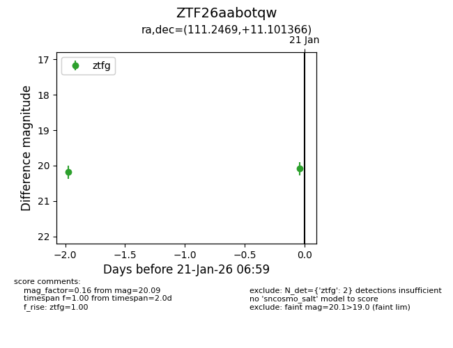
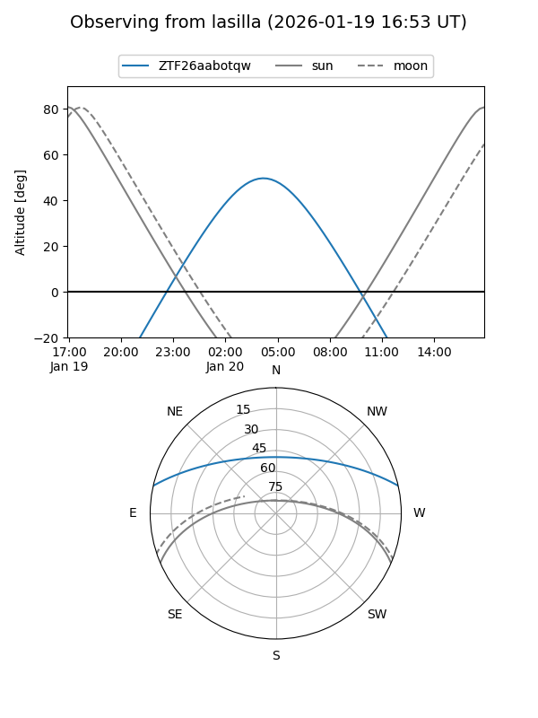
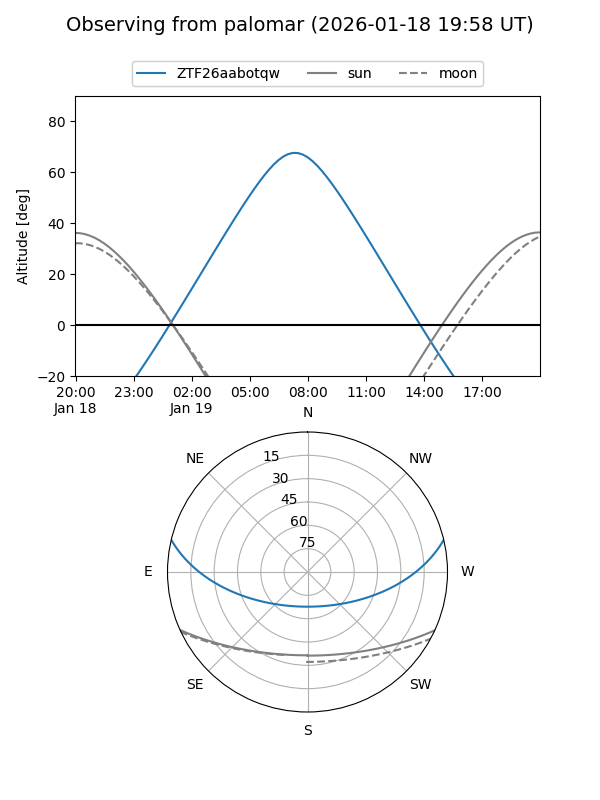
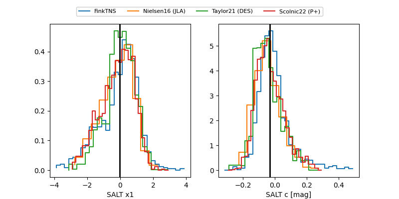

ZTF26aabotqw
Target ZTF26aabotqw at 2026-01-21 07:00
Aliases and brokers:
FINK: link
Lasair: link
ALeRCE: link
alt names
ZTF26aabotqw (ztf,fink_ztf)
Coordinates:
equatorial (ra, dec) = 111.2469,+11.10137
equatorial (HMS+DMS) = 07:24:59.25,+11:06:04.92
galactic (l, b) = (206.6950,+12.42648)
Flags:
Photometry:
last ztfg=20.09
2 ztfg detections
Lightcurve

Visibility


Additional plots
